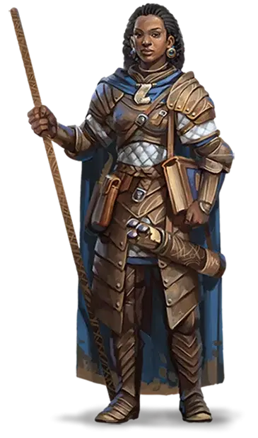

Человек
Human

Это были рассказы о беспокойном народе, путешествовавшем по морям и рекам на длинных кораблях, сперва для грабежа и разбоя, потом в поисках мест для поселений. Но с каждой страницы била энергия, любовь к приключениям. Лириэль читала большую часть ночи, тратя драгоценные свечи.
Она никогда не задумывалась о людях, но эти истории восхищали ее. В этих пожелтевших страницах говорилось о храбрых героях, странных и яростных животных, могучих богах и магии, которая была неотъемлемой частью той дальней земли.
—Элейн Каннингем, Дочь дроу
В большинстве миров люди — это самая молодая из распространённых рас. Они поздно вышли на мировую сцену и живут намного меньше, чем дварфы, эльфы и драконы. Возможно, именно краткость их жизней заставляет их стремиться достигнуть как можно большего в отведённый им срок. А быть может, они хотят что-то доказать старшим расам, и поэтому создают могучие империи, основанные на завоеваниях и торговле. Что бы ни двигало ими, люди всегда были инноваторами и пионерами во всех мирах.
Многоликие
Со своей склонностью к миграции и завоеваниям, люди более разнообразны физически, чем другие распространенные расы. Не существует типичной внешности человека. Рост отдельного представителя может составлять от 5 до 6 футов (от 152 до 184 сантиметров), а вес — от 125 до 250 фунтов (от 60 до 112 килограмм). Оттенок кожи у людей варьируется от почти чёрного до очень бледного, а волосы — от чёрного до светлого тонов (волнистые, кудрявые или прямые); мужчины могут носить волосы на лице, густые или редкие. Многие люди имеют примесь нечеловеческой крови, выдающей черты эльфа, орка, или предков другого происхождения. Люди достигают совершеннолетия около двадцати лет, и редко проживают одно столетие.
Разнообразие во всём
Люди являются самым приспособленным и амбициозным народом среди распространённых рас. Их вкусы, нравы и обычаи сильно отличаются во множестве разных земель, где они поселились. Однако там, где они селятся, они остаются надолго: строят города, стоящие веками, и великие королевства, сохраняющиеся множество столетий. У отдельного человека может быть относительно короткая продолжительность жизни, но человеческая нация и культура сохраняет традиции от своих истоков на время, намного превышающее память одного человека. Они живут сегодняшним днём, что весьма хорошо подходит для приключенческой жизни, и позволяет вдобавок строить планы на будущее, со стремлением оставить после себя прочное наследие. Индивидуально или в группах, люди легко приспосабливаются к ситуации, и всегда остаются внимательными к изменяющейся политической и социальной динамике.
Прочные институты
Там, где один эльф или дварф могут взять ответственность за охрану особого места или великой тайны, человек создаёт священные порядки и институты. В то время как кланы дварфов и старейшины полуросликов передают свои традиции новым поколениям, человеческие храмы, государства, библиотеки и своды законов запечатлевают их традиции в анналах истории. Люди мечтают о бессмертии, но (за исключением тех, кто становится нежитью или достигает божественного восхождения, чтобы избежать оков смерти) достигают его, когда продолжают жить в памяти, после смерти. Хотя некоторые люди могут быть ксенофобами, в целом их общество очень смешано. На землях людей обитает большое количество нечеловеческих рас, по сравнению с количеством людей, живущих на землях нелюдей.
Воплощение амбиций
Люди, ищущие приключений, являются самыми смелыми и амбициозными представителями смелой и амбициозной расы. Они стремятся заработать славу в глазах своих товарищей, накапливая власть, богатство и популярность. Более чем другие народы люди борются за цель, а не за расширение территорий или процветание отдельных фракций.
Вторые лучшие друзья для каждого
Так же легко как они смешиваются друг с другом, люди ассимилируются с представителями других рас. Они могут ужиться почти со всеми, хотя и редко сближаются. Люди служат послами, дипломатами, магистрами, торговцами и чиновниками всех мастей.
О дварфах. «Это крепкий народ, верные друзья, и они держат своё слово. И всё же, их жажда золота однажды погубит их».
Об эльфах. «Лучше не бродить в эльфийских лесах. Они не любят незваных гостей, и вы будете, вероятно, околдованы или изрешечены стрелами. Но если эльф сможет преодолеть проклятую расовую гордость и общаться с вами как с равным, вы можете многому у него научиться».
О полуросликах. «Трудно превзойти ужин в доме полурослика, примерно так же трудно как не проломить голову о его потолок; хорошая еда и хорошие истории перед уютным тёплым очагом. Если бы у полуросликов была бы еще толика амбиций, они могли бы действительно чего-то стоить».
Человеческие имена и этносы
Поскольку культура людей самая разнообразная среди всех существующих рас, у них нет типичных имён. Некоторые родители дают своим детям имена из других наречий, например, из Дварфского или Эльфийского (произносимые более или менее правильно), но большинство родителей даёт имена, связанные с культурой своего региона или традициями предков.
Культура быта и физические характеристики людей могут сильно меняться в зависимости от региона. В Забытых Королевствах, например, одежда, архитектура, кухня, музыка, и литература в северо-западных землях Серебряных Пустошей отличаются от тех, что есть в далёком Тёрмише или Импилтуре на востоке, и совсем не похожи на их аналоги в далёком Кара-Туре. Физические характеристики людей различаются в соответствии с переселениями их предков, поэтому люди Серебряных Пустошей имеют все возможные сочетания цветов кожи.
В Забытых Королевствах широко известны девять этнических групп, хотя более дюжины других находятся в более локализованных областях Фаэруна. Эти группы и типичные имена их представителей могут быть использованы в качестве примера, вне зависимости от того, из какого мира ваш человек.
Дамарец
Начавшие свою историю на северо-западе Фаэруна, Дамарцы имеют средний рост и сложение, оттенок их кожи варьируется от смуглого до светлого. Их волосы обычно коричневые или чёрные, а цвет глаз сильно отличается, хотя карие — самые распространённые.
Имена дамарцев: (Мужские) Айвор, Бор, Глэр, Григор, Иган, Козеф, Миваль, Орел, Павел, Сергор, Фодель; (женские) Алетра, Зора, Кара, Катернин, Мара, Натали, Ольма, Тана; (фамилии) Берск, Дотск, Куленов, Марск, Немецк, Стараг, Чернин, Шемов
Иллусканец
Иллусканцы — высокий, светлокожий народ с голубыми или серыми со стальным оттенком глазами. У большинства чёрные волосы цвета вороньего крыла, но у тех, кто населяет край северо-запада — светлые, рыжие или светло-русые волосы.
Имена иллусканцев: (Мужские) Блас, Бран, Гет, Ландер, Лют, Малсер, Стор, Таман, Урт, Фрат, Эндер; (женские) Амафрея, Бетха, Вестра, Кетра, Мара, Ольга, Силифрей, Цефрея; (фамилии) Брайтвуд, Виндривер, Лакмэн, Хелдер, Хорнрейвен, Штормвинд
Калишит
Более низкие и стройные, чем большинство других людей, калишиты имеют смугло-коричневую кожу, волосы и глаза. Они обитают в основном на юго-западе Фаэруна.
Имена калишитов: (Мужские) Асеир, Бардеид, Зашеир, Кхемед, Мехмен, Судейман, Хасеид; (женские) Атала, Джасмаль, Зашеида, Мейлиль, Сейдиль, Сейпора, Хама, Яшеира; (фамилии) Баша, Джассан, Думеин, Кхалид, Мостана, Пашар, Рейн
Мулан
Преобладающие на восточных и юго-восточных берегах Внутреннего моря, муланы, как правило, высокие, стройные, с кожей цвета янтаря и карими или светло-коричневыми глазами. Волосы у них от чёрного до тёмно-коричневого оттенков, но на землях, где муланы наиболее многочисленны, дворяне и другие жители сбривают все волосы.
Имена муланов: (Мужские) Аот, Барерис, Кетот, Мумед, Рамас, Со-Кехур, Тхазар-Де, Урхур, ЭхпутКи; (женские) Аризима, Золис, Мурити, Нефис, Нулара, Сефрис, Тола, Умара, Чатхи; (фамилии) Анкхалаб, Анскульд, Натандем, Серпет, Уутракт, Фезим, Хахпет
Рашеми
Рашеми, обитающие к востоку от Внутреннего моря и часто смешивающиеся с муланами, обычно низкорослые, коренастые и мускулистые. У них, как правило, тёмная кожа, чёрные глаза, и густые чёрные волосы.
Имена рашеми: (Мужские) Боривик, Владислак, Джандар, Канитар, Мадислак, Ральмевик, Фаургар, Шаумар; (женские) Имзель, Иммит, Наварра, Таммит, Файварра, Хульмарра, Шеварра, Юльдра; (фамилии) Дайрнина, Илтазяра, Мурнитара, Стаянога, Улмокина, Чергоба
Тетирец
Распространившиеся вдоль всего побережья Меча в западной части Фаэруна, тетирцы являются людьми среднего сложения и роста со смуглой кожей, которая светлее у северных поселенцев. Цвет волос и глаз у них сильно различается, но коричневые волосы и голубые глаза — наиболее типичны. Тетирцы в основном используют чондатанские имена.
Тёрами
Рожденные на южных берегах Внутреннего моря, Тёрами, как правило, высокие и мускулистые люди с тёмно-красной кожей, чёрными волнистыми волосами и чёрными глазами.
Имена тёрами: (Мужские) Антон, Диеро, Маркон, Пьерон, Римардо, Ромеро, Салазар, Умберо; (женские) Балама, Вонда, Джалана, Дона, Куара, Луиза, Марта, Селизе, Фаила; (фамилии) Агосто, Асторио, Домине, Калабра, Маривальди, Писакар, Рамондо, Фалоне
Чондатанец
Чондатанцы — стройный, смуглый народ с коричневыми, от светлых до почти чёрных, волосами. Они высокие, у них зелёные или карие глаза, но это применимо не ко всем. Чондатанцы преобладают в центральных землях Фаэруна, вокруг Внутреннего моря.
Имена чондатанцев: (Мужские) Горстаг, Грим, Дарвин, Дорн, Маларк, Морн, Рэндал, Стедд, Хельм, Эвендур; (женские) Арвин, Джессаиль, Керри, Лурин, Мири, Рован, Тесселе, Шандри, Эсвель; (фамилии) Бакмэн, Грэйкасл, Дандрэгон, Толстаг, Эвенвуд, Эмблкроун
Шу
Шу — наиболее многочисленная и могущественная раса в Кара-Туре, далеко на востоке Фаэруна. У них желтовато-бронзовый оттенок кожи, с тёмными волосами и чёрными глазами. Фамилии шу обычно стоят перед именами.
Имена шу: (Мужские) Ан, Вэнь, Лонг, Лянь, Менг, Он, Фай, Цзюн, Цзянь, Чен, Чи, Шань, Шуй; (женские) Бай, Ксяо, Лей, Мей, Тай, Цзя, Чао, Шуй; (фамилии) Вань, Као, Кунг, Лао, Линг, Мей, Пинь, Сум, Тань, Хуан, Чиень, Шин
Особенности людей
Сложно делать какие-либо обобщения относительно людей, но ваш персонаж-человек обладает следующими особенностями.
Увеличение характеристик. Значение всех ваших характеристик увеличивается на 1.
Возраст. Люди становятся взрослыми в районе 20 лет, и живут менее столетия.
Мировоззрение. Любое.
Размер. Люди сильно различаются по размерам. Некоторые с трудом достигают 5 футов (152 сантиметров) ростом, тогда как другие имеют рост, превосходящий 6 футов (183 сантиметра). Вне зависимости от роста, ваш размер — Средний.
Скорость. Ваша базовая скорость ходьбы составляет 30 футов.
Языки. Вы можете говорить, читать и писать на Общем и еще одном языке на ваш выбор. Люди обычно изучают языки народов, с которыми имеют дело, включая редкие диалекты. Они любят разбавлять собственную речь словами, позаимствованными из других языков: орочьими ругательствами, эльфийскими музыкальными терминами, дварфскими военными командами.
Альтернативные особенности людей
Если в своей компании вы используете дополнительные правила об использовании черт из главы 6, ваш Мастер может позволить использовать эти альтернативные особенности вместо указанного выше стандартного увеличения характеристик.
Увеличение характеристик. Значение двух разных характеристик на ваш выбор увеличивается на 1.
Навыки. Вы получаете владение одним навыком на ваш выбор.
Черта. Вы получаете одну черту на ваш выбор.
Разновидности людей
Но помимо обычных людей в мультивселенной D&D существует множество других видов. С разрешения вашего Мастера вы можете выбрать один из них.
Метка поиска (RLW)
Источник: Eberron: Rising from the Last War
Метка Поиска обостряет чувства, направляя охотника к добыче. Единственная среди Меток Дракона, принадлежащая двум расам: людям и полуоркам. Впервые она появилась в Теневом Пограничье, где охотники кланов использовали её, для поиска своей добычи.
Дом Тарашк
Лидер: Триумвират (Маагрим Торм, Хандар’аашта, Дарик Велдеран)
Штаб-квартира: Зараш’ак, Теневое Пограничье
Дом Тарашк традиционно лицензирует сыщиков и охотников за головами. В последнее время Гильдия Искателей дома расширилась и занялась поисками драконьих осколков.
Поскольку осколки драконов являются источником магической экономики, способность Дома дала им новое богатство и влияние.
Тарашк - самый молодой из Домов Отмеченных Драконом, и он еще не усвоил всех принятых обычаев. Различные кланы, объединившиеся, чтобы сформировать Дом, сохраняют своё влияние, и наследники семей обычно сохраняют свои семейные имена, а не принимают «д’Тарашк», как того требует традиция. Каждый из трех главных кланов - Аашта, Торм и Велдеран имеют своего представителя в Триумвирате, который управляет Домом, и городом Зараш’ак в Теневом Пограничье. Вместе они выступают как единое целое под гербом драконны (гибриде льва и дракона).
Если ваш персонаж — человек, обладающий меткой поиска, следующие особенности заменяют расовые особенности персонажа из «Книги игрока», за исключением возраста, мировоззрения, размера и скорости.
Увеличение характеристик. Значение вашей Мудрости увеличивается на 2, а значение Телосложения на 1.
Тёмное зрение. Вы можете видеть в тусклом свете на 60 футов, как если бы это был яркий свет, а также в темноте, если бы это был тусклый свет. Вы не можете различать цвета в темноте, вам видны лишь оттенки серого.
Интуиция охотника. Совершая проверку Мудрости (Восприятие или Выживание), вы можете добавить к4 к результату проверки.
Магия искателя. Вы можете накладывать заклинание метка охотника [hunter’s mark] с помощью этой особенности. При достижении 3-го уровня вы можете накладывать заклинание поиск предмета [locate object].
Как только вы накладываете любое из этих заклинаний подобным образом, вам необходимо закончить продолжительный отдых, чтобы наложить это заклинание подобным образом вновь. Базовой характеристикой для этого заклинания является Мудрость.
Заклинания метки. Если вы владеете умением «Использование заклинаний» или «Магия договора», то заклинания из таблицы «Заклинания метки поиска» добавляются в список заклинаний вашего класса заклинателя.
Заклинания метки поиска
Метка ухода (RLW)
Источник: Eberron: Rising from the Last War
Метка Ухода дарует возможность устанавливать первичную связь между носителем, животными и природным миром, даруя силу успокаивать и управлять ими. Эта власть выходит за пределы обычных животных;
Метка позволяет её носителю управлять гиппогрифом так же легко, как и лошадью.
Дом Вадалис
Лидер: Далин д’Вадалис
Штаб-квартира: Фолсвуд (недалеко от Варны, Элдинские Владения)
Представленный гиппогрифом, Дом Вадалис играет важную роль в повседневной жизни, предоставляя мясо, скакунов и многое другое. Вадалис не являются одним из самых могущественных домов, но его бароны, как правило, довольны; их больше интересует обнаружение новых монстров, чем участие в политике. Нынешний глава дома, Далин Д’Вадалис, пренебрегает использованием титула и не имеет никаких стремлений к дворянству или величию для себя или своего дома.
Дом Вадалис разводит и дрессирует животных для самых разных целей. Помимо того, что Дом содержит обширные скотоводческие фермы, а также дрессирует лошадей и гончих, Метка Ухода позволяет Вадалис работать и с более экзотическими созданиями. Грифонов, гиппогрифов и даже панцирниц можно разводить и дрессировать. Но даже с Меткой Ухода это опасная работа, что приводит к большой текучке кадров на фермах панцирниц. Но этих экзотических существ недостаточно для удовлетворения интереса передовых исследователей Дома, что привело к практике магического скрещивания. Используя драконьи осколки в качестве фокусировок Вадалис нашли способы создания магических существ. Как правило, эти существа всего лишь усовершенствованные версии оригиналов, ставшие быстрее, сильнее и умнее. Ходят слухи, что Вадалис создаёт своих собственных монстров. Некоторые слухи также настаивают на том, что Вадалис пытаются создать при помощи магии улучшенных людей.
Если ваш персонаж — человек, имеющий метку ухода, следующие особенности заменяют расовые особенности персонажа из «Книги игрока».
Увеличение характеристик. Значение вашей Мудрости увеличивается на 2, а значение одной другой характеристики на ваш выбор увеличивается на 1.
Дикая интуиция. Когда вы совершаете проверку Мудрости (Уход за животными) или Интеллекта (Природа), вы можете добавить к4 к результату проверки.
Первобытная связь. Вы можете накладывать заклинания дружба с животными [animal friendship] и разговор с животными [speak with animals] используя эту особенность. Как только вы накладываете любое из этих заклинаний подобным образом, вам необходимо закончить короткий или продолжительный отдых, чтобы наложить это заклинание подобным образом вновь. Базовой характеристикой для этого заклинания является Мудрость.
Заклинания, накладываемые с помощью данной особенности, не требуют материальных компонентов.
Чем крупнее противник... Начиная с 3-го уровня, когда вы используете заклинание дружба с животными [animal friendship] или разговор с животными [speak with animals], вы можете выбрать в качестве цели Зверя или Монстра, при условии, что значение его Интеллекта 3 или ниже.
Заклинания метки. Если вы владеете умением «Использование заклинаний» или «Магия договора», то заклинания из таблицы «Заклинания метки ухода» добавляются в список заклинаний вашего класса заклинателя.
Заклинания метки ухода
Метка создания (RLW)
Источник: Eberron: Rising from the Last War
Метка Создания помогает своему носителю в любом акте созидания. Носитель метки может чинить сломанные вещи прикосновением, и у него всегда есть небольшой магический предмет, над которым он работает. Лишь изобретатель или волшебник получит максимальную пользу от Метки, но любой найдёт применение зачарованному клинку.
Дом Каннит
Лидеры: Восточного Каннит - Зорлан д’Каннит; Западного Каннит - Джорланна д’Каннит; Южного Каннит - Меррикс д’Каннит
Штаб-квартира: Восточного Каннит, анклав Корта (Каррнат); Западного Каннит, земли Аундаира (недалеко от Файрхэвена, Аундаир); Южного Каннит, башня Каннит (Шарн, Бреландия)
Дом Каннит господствует во всех формах производства, как мистических, так и обычных. Горгона - символ кузниц Каннит, использующих упрощенные формы производства для быстрого создания обычных товаров. Даже независимые ремесленники часто учатся своему ремеслу в Академиях Дома Каннит и придерживаются стандартов этого Дома.
Дом Создания создает инструменты, на которые полагаются другие Дома, тем самым,являясь негласным лидером Двенадцати.
Последняя Война была временем больших возможностей для Дома Каннит. Каждая нация хотела получить вооружение и кованных, а также обычное снаряжение и доспехи.
Война вознесла Дом на вершину, а потом уничтожила его. Дом Каннит был расположен в Сайре, и в День Скорби были уничтожены лидеры Дома и ключевые сооружения.
Теперь три барона пытаются заполнить пустоту, от потери патриарха, это алхимик Джорланна из Файрхэвена, оружейник Зорлан из Корта и Меррикс из Шарна, создатель кованных. Еще предстоит выяснить, объединит ли кто-то из этих лидеров Дом или же они разделятся, не выдержав напряжения. Если вы наследник Дома Каннит, вам следует решить, кому из этих баронов вы служите, или же у вас есть другие идеи о будущем дома.
Если ваш персонаж — человек, несущий метку создания, следующие особенности заменяют расовые особенности персонажа из «Книги игрока».
Увеличение характеристик. Значение вашего Интеллекта увеличивается на 2, а значение одной другой характеристики на ваш выбор увеличивается на 1.
Интуиция ремесленника. Когда вы совершаете проверку Магии или проверку характеристики с помощью инструментов ремесленника, вы можете добавить к4 к результату проверки.
Дар творца. Вы получаете владения одним из ремесленных инструментов по вашему выбору.
Кузнечная магия. Вы можете накладывать заклинание магическое оружие [magic weapon] с помощью этой особенности. Если вы совершаете это действие, то заклинание длится 1 час и не требует концентрации. Как только вы накладываете это заклинание подобным образом, вам необходимо закончить продолжительный отдых, чтобы наложить это заклинание подобным образом вновь.
Кроме того, вы знаете заговор починка [mending]. Базовой характеристикой для этих заклинаний является Интеллект.
Заклинания метки. Если вы владеете умением «Использование заклинаний» или «Магия договора», то заклинания из таблицы «Заклинания метки создания» добавляются в список заклинаний вашего класса заклинателя.
Заклинания метки создания
| Уровень заклинаний | Заклинания |
| 1 | опознание [identify], Тензеров парящий диск [Tenser’s floating disk] |
| 2 | магическое оружие [magic weapon], вечный огонь [continual flame] |
| 3 | призыв заграждения [conjure barrage], стихийное оружие [elemental weapon] |
| 4 | изготовление [fabricate], изменение формы камня [stone shape] |
| 5 | сотворение [creation] |
Метка прохода (RLW)
Источник: Eberron: Rising from the Last War
Метка Прохода управляет движением, позволяя её носителю двигаться со сверхъестественной скоростью. Носитель Метки может даже перемещаться сквозь пространство в мгновение ока.
Дом Ориен
Лидер: Квенти д’Ориен
Штаб-квартира: Дом Путешествий (Проход, Аундаир)
Дом Прохода управляет наземным транспортом. Молниевая дорога - самый значимый инструмент Дома, но Ориен также управляет караванами и экипажами на всей территории Кхорвайра. Фокусировки из драконьих осколков гарантируют то, что самые быстрый транспорт тот, которым управляют наследники с Меткой Прохода. Дом также лицензирует неотмеченных возчиков. Гильдия Курьеров Дома Ориен доставляет письма и посылки но также имеет филиал, занимающийся секретными и опасными доставками.
Ориен доминировал в перевозках на протяжении многих веков, но сейчас Дом столкнулся с проблемами. Земли Скорби - это серьезное препятствие для наземного транспорта, и барон Квенти д’Ориент испытывает огромные трудности с привлечением средств на восстановление линии молниевой дороги через уничтоженную местность. В действительности, он проводит большую часть своего времени вдали от своей штаб-квартиры в Аундаире, пытаясь собрать средства на восстановление, одновременно следя за работой дома. Он путешествует на западе Кхорвайра по молниевой дороге, в личном вагоне - Серебряном единороге, отсылающем к символу дома - единорогу. Однако проблемы Дома Ориен не заканчиваются на одних лишь Землях Скорби. Возрастающая роль воздушных кораблей Лирандар угрожает бизнесу Дома. Барон Кванти хотел бы иметь возможность предложить более скоростной транспорт, но телепортация на большие расстояния - это услуга, которую могут предоставить только самые выдающиеся носители Метки Ориен. В данный момент, Ориен работают с Домом Каннит в попытке раскрыть и усилить дар Метки Прохода. Наследники Ориен могут быть втянуты в эти эксперименты или в соперничество с Домом Лирандар.
Если ваш персонаж — человек, несущий метку прохода, следующие особенности заменяют расовые особенности персонажа из «Книги игрока».
Увеличение характеристик. Значение вашей Ловкости увеличивается на 2, а значение одной другой характеристики на ваш выбор увеличивается на 1.
Скорость курьера. Ваша базовая скорость ходьбы увеличивается до 35 футов.
Интуитивное движение. Когда вы совершаете проверку Ловкости (Акробатика) или проверку характеристики для управления или обслуживания наземного транспорта, вы можете добавить к4 к результату проверки.
Магический проход. Вы можете накладывать заклинание туманный шаг [misty step] используя эту особенность. Как только вы накладываете это заклинание подобным образом, вам необходимо закончить продолжительный отдых, чтобы наложить это заклинание подобным образом вновь. Базовой характеристикой для этого заклинания является Ловкость.
Заклинания метки. Если вы владеете умением «Использование заклинаний» или «Магия договора», то заклинания из таблицы «Заклинания метки прохода» добавляются в список заклинаний вашего класса заклинателя.
Заклинания метки прохода
Метка стража (RLW)
Источник: Eberron: Rising from the Last War
Метка Стража предостерегает и защищает. Она обостряет чувства и рефлексы, позволяя наследнику реагировать на угрозы со сверхъестественной скоростью. Она может защитить своего носителя от угроз. Будь то на поле боя или в бальном зале, тот, кто носит метку стража, всегда готов к опасности.
Дом Денейт
Лидер: Бревен д’Денейт
Штаб-Квартира: Башня Стражей (Каррлактон, Каррнат)
Дом Денейт зародился в Каррнате, и в его жилах течет война. На протяжении веков Гильдия Клинков Дома Денейт контролировала рынок наемников. Хоть солдаты с Меткой Стража и входят в число элитных сил Денейт, Дом также предлагает услуги широкого круга других воинов, включая боевые отряды Валенара и гоблинов Дроама. За пределами полей сражений, Гильдия Защитников предоставляет услуги выдающихся телохранителей для тех, кто может себе их позволить. Дом Денейт также известен своими Маршалами Стражи, агентами, уполномоченные преследовать преступников и обеспечивать соблюдение закона по всей территории Кхорвайра. Маршалы Стражи держат честь Дома в своих руках. Быть Маршалом - это честь, связанная с большими ожиданиями.
Несмотря на свою мощь и желание некоторых представителей Дома поиграться своими военными мускулами, Дом Денейт всегда сохранял абсолютный нейтралитет, продавая свои услуги всем сторонам конфликта. Барон Бревен д’Денейт не выказывает никакого желания использовать внушительные, отмеченные химерой, военные силы своего Дома для своих собственных целей, но он окружен воинственными советниками, которые хотят видеть Денейт правящим всем Кхорвайром. Дом Денейт также оказался втянут в обостряющееся соперничество с Домом Тарашк, так как последние постепенно выходят на рынок наемников.
Если ваш персонаж — человек, носящий метку стража, следующие особенности заменяют расовые особенности персонажа из «Книги игрока».
Увеличение характеристик. Значение вашего Телосложения увеличивается на 2, а значение Мудрости на 1.
Интуиция стража. Когда вы совершаете проверку Мудрости (Проницательность или Восприятие), вы можете добавить к4 к результату проверки.
Щит стража. Вы можете накладывать заклинание щит [shield] с помощью этой особенности. Как только вы накладываете это заклинание подобным образом, вам необходимо закончить продолжительный отдых, чтобы наложить это заклинание подобным образом вновь. Базовой характеристикой для этого заклинания является Мудрость.
Бдительный страж. Когда по существу, которое вы видите в пределах 5 футов, попадают броском атаки, вы можете реакцией поменяться местами с этим существом, и попасть под атаку вместо него. Вы можете повторно использовать эту способность после окончания продолжительного отдыха.
Заклинания метки. Если вы владеете умением «Использование заклинаний» или «Магия договора», то заклинания из таблицы «Заклинания метки стража» добавляются в список заклинаний вашего класса заклинателя.
Заклинания метки стража
| Уровень заклинаний | Заклинания |
| 1 | вызов на дуэль [compelled duel], щит веры [shield of faith] |
| 2 | охраняющая связь [warding bond], область истины [zone of truth] |
| 3 | контрзаклинание [counterspell], защита от энергии [protection from energy] |
| 4 | защита от смерти [death ward], страж веры [guardian of faith] |
| 5 | длань Бигби [Bigby’s hand] |